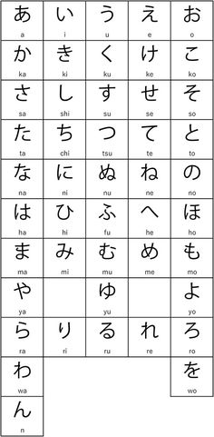

Os japoneses utilizam com mais frequência o Hiragana, o Katakana e o Kanji, e geralmente os três alfabetos são utilizados em conjunto. O Hiragana e Katakana são silabários e fonéticos e o Kanji é ideográfico.
Hiragana (ひらがな)
O Hiragana é o alfabeto mais usado no Japão, sendo utilizado por vezes sozinho e às vezes acompanhado do Kanji.

Normalmente, aprende-se primeiro o Hiragana por ser o “alfabeto base”, visto que é utilizado para
escrever as palavras nativas do japonês e possuir uma forma de escrever mais fácil que os demais.
Aqui você vê um tutorial para aprender a escrita.
Depois de dominar o hiragana, aprendemos o katakana e finalmente os kanjis (ideogramas).
Uma dica é você fazer flash cards para decorar as letras!.
Os flash cards são pequenos retângulos recortados em papel ou digitalizados, utilizados para associar uma informação colocada na parte da frente com uma resposta no verso. Assim, ao ver a letra na parte da frente, você deve adivinhar como se pronuncia ela, depois pra ver se você acertou veja no verso da folha qual era a resposta.